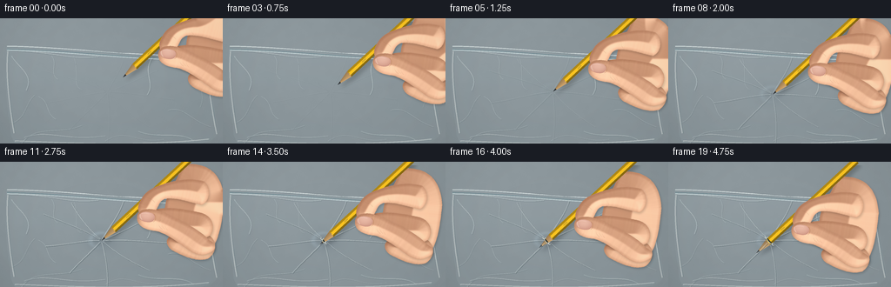
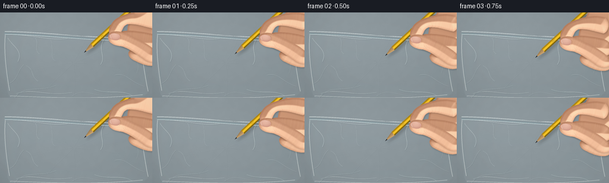

CODING AGENTS AS PIXEL WORLD MODELS
traex/GPT-6.1-Sol · mechanics_0029
点击播放 · 原生 RGB 像素
逐轮保存的候选
回放视频、检查图与代码变化。
每份候选均可单独播放。实际图片检查记录在下方工具轨迹中。
候选 01播放与检查图
点击播放 · 原生 RGB 像素


展开代码变化
--- 上一保存版本
+++ 本次保存版本
@@ -0,0 +1,294 @@
+from pathlib import Path
+import json, math
+import numpy as np
+from PIL import Image, ImageDraw, ImageFilter, ImageFont
+from scipy.ndimage import distance_transform_edt, gaussian_filter
+import artifact_io
+
+ROOT=Path(__file__).resolve().parent
+SPEC=json.loads((ROOT/'task_spec.json').read_text())
+W,H=SPEC['width'],SPEC['height']
+S=4
+SW,SH=W*S,H*S
+rng=np.random.default_rng(9127)
+Y,X=np.mgrid[0:SH,0:SW].astype(float)/S
+noise=rng.normal(0,1,(SH,SW)).astype(np.float32)
+softnoise=gaussian_filter(noise,2.7*S)
+D=np.array([-0.733,0.680]); D=D/np.linalg.norm(D)
+N=np.array([-D[1],D[0]])
+
+def p(v): return tuple(float(q)*S for q in v)
+def bezier(points, steps=50):
+ a,b,c,d=np.array(points,float)
+ t=np.linspace(0,1,steps)[:,None]
+ return (1-t)**3*a+3*(1-t)**2*t*b+3*(1-t)*t*t*c+t**3*d
+
+def path(start, commands):
+ pts=[np.array(start,float)]; cur=np.array(start,float)
+ for c in commands:
+ if len(c)==2: cur=np.array(c,float); pts.append(cur)
+ else:
+ z=bezier([cur,c[:2],c[2:4],c[4:6]],30)
+ pts.extend(z[1:]); cur=z[-1]
+ return np.array(pts)
+
+def mask_poly(pts):
+ im=Image.new('L',(SW,SH)); ImageDraw.Draw(im).polygon([p(a) for a in pts], fill=255)
+ return im
+
+def layer_line(im,pts,color,width=1):
+ ImageDraw.Draw(im).line([p(a) for a in pts],fill=color,width=max(1,round(width*S)),joint='curve')
+
+def over(im, rgba): return Image.alpha_composite(im.convert('RGBA'),rgba).convert('RGB')
+
+def skin(im,pts,seed=0,light=0):
+ mask=mask_poly(pts)
+ m=np.asarray(mask)/255.
+ dist=distance_transform_edt(m)/S
+ # Convex skin volumes: warm core, shaded rolled edges, upper-left key light.
+ dh=gaussian_filter(dist,0.7*S)
+ gy,gx=np.gradient(dh)
+ edge=np.clip(dist/4.1,0,1)
+ illum=np.clip(0.48+0.22*edge-0.16*gx*S-0.24*gy*S,0,1)
+ pts=np.array(pts); xmin,ymin=pts.min(0); xmax,ymax=pts.max(0)
+ illum+=0.095*(1-(Y-ymin)/max(ymax-ymin,1))
+ col=np.array([135,78,51])[None,None,:]+illum[:,:,None]*np.array([132,137,126])[None,None,:]
+ col+=np.stack([noise*1.15,noise*0.92,noise*0.8],2)
+ col+=softnoise[:,:,None]*6
+ col+=light
+ tex=Image.fromarray(np.uint8(np.clip(col,0,255)))
+ # Soft contact shadow only, no graphic outlines.
+ sh=Image.new('RGBA',(SW,SH),(0,0,0,0))
+ sh.putalpha(mask.filter(ImageFilter.GaussianBlur(1.3*S)).point(lambda x:int(x*.17)))
+ shifted=Image.new('RGBA',(SW,SH)); shifted.alpha_composite(sh,(int(1.2*S),int(1.7*S)))
+ im=over(im,shifted)
+ im.paste(tex,(0,0),mask)
+ return im
+
+def pencil_layer(tip, section=None):
+ u=(X-tip[0])* (-D[0])+(Y-tip[1])*(-D[1])
+ v=(X-tip[0])*N[0]+(Y-tip[1])*N[1]
+ cone_len=18.8
+ rad=np.where(u<cone_len,4.05*np.maximum(u,0)/cone_len,4.05)
+ inpen=(u>=0)&(u<157)&(np.abs(v)<rad)
+ if section is not None:
+ if section[0]=='front': inpen&=u>=section[1]
+ else: inpen&=u<section[1]
+ vv=v/np.maximum(rad,.01)
+ # Six-sided lacquered yellow pencil, asymmetric sunlight on upper facet.
+ fac=np.where(vv<-.42,.56,np.where(vv<.38,1.,.73))
+ fac+=.08*(1-np.abs(vv))
+ body=np.stack([236*fac,184*fac,30*fac],2)
+ shine=np.exp(-((vv+.4)/.065)**2)*22
+ body+=shine[:,:,None]
+ body+=noise[:,:,None]*.45
+ wood=(u<cone_len+0.65*np.sin(v*2.4))
+ grain=np.sin(u*1.9+v*10.5)*1.7+np.sin(v*31+u*.18)*1.2
+ wf=np.clip(.89-.14*vv,.63,1.1)
+ woodcol=np.stack([205*wf+grain,163*wf+grain,108*wf+grain*.65],2)
+ body=np.where(wood[:,:,None],woodcol,body)
+ graphite=u<4.75
+ gval=37+11*(1-np.abs(vv))+11*np.exp(-((vv+.4)/.17)**2)
+ gr=np.stack([gval*.92,gval*.95,gval],2)
+ body=np.where(graphite[:,:,None],gr,body)
+ alpha=np.uint8(inpen)*255
+ im=Image.fromarray(np.dstack([np.uint8(np.clip(body,0,255)),alpha]),'RGBA')
+ # Small graphite manufacturing stamp on the broad face, behind exposed wood.
+ # Fine dark strokes follow the shaft rather than a floating text overlay.
+ dr=ImageDraw.Draw(im)
+ for k in range(9):
+ uu=39+k*.65
+ if section is None or (section[0]=='front' and uu>=section[1]) or (section[0]=='back' and uu<section[1]):
+ base=tip-D*uu+N*(-.2)
+ a=base+N*(-.45); b=base+N*(.45+(k%3)*.15)
+ dr.line([p(a),p(b)],fill=(80,66,24,145),width=1)
+ return im
+
+# Static curved bag silhouette and folds: two transparent, slightly displaced walls.
+bag=path((8,31),[(47,30,103,38,144,40),(180,41,213,39,235,43),(241,58,243,91,251,130),(249,139,239,143,224,145),(160,152,76,147,24,149),(15,145,11,133,12,123),(7,102,5,55,8,31)])
+bagmask=mask_poly(bag)
+bag_m=np.asarray(bagmask)/255.
+
+# Wrinkles use offset highlight/shadow pairs with soft, tapering lengths.
+static_folds=[
+[(13,43),(22,58),(39,64),(30,83)],
+[(15,120),(31,113),(28,99),(40,88)],
+[(24,145),(40,121),(67,135),(94,123)],
+[(28,137),(55,127),(77,142),(121,135)],
+[(59,43),(67,52),(56,62),(66,70)],
+[(84,43),(92,60),(82,78),(94,82)],
+[(175,45),(163,63),(179,74),(169,88)],
+[(223,48),(214,68),(240,78),(230,102)],
+[(242,125),(218,117),(212,101),(193,106)],
+[(221,140),(206,130),(180,139),(159,130)],
+[(44,90),(58,96),(51,108),(64,116)],
+[(121,141),(145,125),(157,145),(188,139)],
+[(11,37),(63,38),(78,48),(113,44)],
+]
+
+# Precomputed background: diffuse grey-blue tabletop and defocused studio ambience.
+shade=5.5*np.sin(X/133)+4*np.cos(Y/115)
+lightfield=11*np.exp(-((X-38)**2/(2*95**2)+(Y-14)**2/(2*90**2)))
+bg=np.stack([126+shade+lightfield,137+shade+lightfield,142+shade+lightfield],2)
+bg+=softnoise[:,:,None]*14+noise[:,:,None]*.45
+background=Image.fromarray(np.uint8(np.clip(bg,0,255)))
+
+# Hand contours, individually lit and overlapped as real digits.
+palm=path((235,-20),[(264,-22,280,-9,282,22),(279,52,275,74,261,84),(247,88,230,76,220,61),(209,44,213,18,225,1),(229,-4,231,-13,235,-20)])
+ring=path((259,59),[(243,54,231,57,220,63),(214,66,215,74,222,79),(235,86,250,93,263,89),(274,82,276,66,259,59)])
+middle=path((255,36),[(238,32,218,29,204,32),(196,33,190,36,190,43),(191,52,207,58,219,63),(235,71,253,70,266,62),(273,51,267,39,255,36)])
+index=path((259,0),[(242,-5,222,-1,207,5),(197,8,190,14,187,20),(183,26,181,34,187,39),(192,43,200,39,203,34),(208,26,207,23,214,20),(226,18,242,24,256,27),(265,24,268,8,259,0)])
+thumb=path((264,67),[(253,55,236,47,222,41),(210,35,202,31,193,32),(185,32,181,37,182,44),(183,51,191,56,203,57),(215,59,227,69,240,78),(252,87,262,86,270,79),(274,73,269,70,264,67)])
+
+def draw_hand(im,offset):
+ im=skin(im,palm+offset,0)
+ im=skin(im,ring+offset,1,-5)
+ im=skin(im,middle+offset,2,-3)
+ # The visible shaft sits between the middle finger and the forefinger/thumb.
+ return im
+
+def hand_front(im,offset):
+ im=skin(im,index+offset,3,1)
+ im=skin(im,thumb+offset,4,3)
+ ol=Image.new('RGBA',(SW,SH))
+ # Fold creases, gently doubled by a tiny lit edge.
+ curves=[([(209,44),(205,48),(207,53),(211,55)],(125,74,50,85),.37),
+ ([(212,44),(209,48),(210,52),(214,55)],(135,79,51,55),.28),
+ ([(215,48),(213,50),(215,55),(217,56)],(142,83,54,55),.3),
+ ([(193,18),(197,20),(200,21),(202,24)],(130,76,51,65),.35),
+ ([(220,10),(219,13),(220,16),(222,18)],(137,84,54,50),.35),
+ ([(228,70),(233,71),(239,74),(242,78)],(140,81,48,42),.35)]
+ for control,color,width in curves:
+ curve=bezier(np.array(control)+offset)
+ layer_line(ol,curve,color,width)
+ layer_line(ol,curve+[0,-.38],(249,199,157,47),.27)
+ im=over(im,ol)
+ # Thumbnail, softly beveled, with a pale translucent free edge and nail bed.
+ nail=path((184.4,38.1),[(187,34.9,192.5,34.2,198.1,36.3),(201.8,37.5,203.5,41,200.6,45),(198.2,47.6,191.8,47.2,187.2,44.9),(184.1,43.4,182.6,40.6,184.4,38.1)])+offset
+ nm=mask_poly(nail); dist=distance_transform_edt(np.asarray(nm)>0)/S
+ center=np.array([193,40])+offset
+ ll=np.clip(1-((X-center[0])/11)**2-((Y-center[1]+2)/8)**2,0,1)
+ col=np.stack([213+21*ll,158+28*ll,139+27*ll],2)
+ col+=noise[:,:,None]*.5
+ rim=np.clip(1-dist/1,0,1)
+ col-=rim[:,:,None]*np.array([9,12,9])
+ tex=Image.fromarray(np.uint8(np.clip(col,0,255))); im.paste(tex,(0,0),nm)
+ detail=Image.new('RGBA',(SW,SH))
+ layer_line(detail,bezier(np.array([(185.5,38),(185,39.5),(185.7,42),(187.4,44)])+offset),(245,215,190,165),.7)
+ layer_line(detail,bezier(np.array([(187,37.1),(189.5,36),(193,36.5),(196,37.5)])+offset),(255,225,207,90),.5)
+ layer_line(detail,bezier(np.array([(201,37.5),(204.1,39.8),(203.5,44.9),(200.4,46.6)])+offset),(151,91,65,80),.45)
+ return over(im,detail)
+
+
+def film(im,c,stress,penetrated=False):
+ # The transparent wall transmits the underlying table. Gentle curved reflections
+ # and high-frequency creases reveal its very small thickness.
+ tint=np.stack([170+5*np.sin(X/60),185+5*np.sin(X/60),191+5*np.sin(X/60)],2)
+ alpha=bag_m*(.11+.025*np.sin(Y/22)+.026*np.exp(-(X-18)**2/100))
+ arr=np.asarray(im).astype(float)
+ arr=arr*(1-alpha[:,:,None])+tint*alpha[:,:,None]
+ # Soft concave dimple as the membrane elastically stretches.
+ dx=X-c[0]; dy=Y-c[1]
+ rr=(dx/20)**2+(dy/14)**2
+ depression=stress*np.exp(-rr*1.5)
+ arr+=depression[:,:,None]*np.array([-13,-12,-10])
+ spec=stress*15*np.exp(-((np.sqrt(rr+.0001)-.63)/.15)**2)*(np.clip((-dx-dy)/25+.5,0,1))
+ arr+=spec[:,:,None]*np.array([.8,1,1.1])
+ im=Image.fromarray(np.uint8(np.clip(arr,0,255)))
+ lines=Image.new('RGBA',(SW,SH))
+ for j,controls in enumerate(static_folds):
+ pts=bezier(controls,75)
+ layer_line(lines,pts+[.7,.8],(73,89,94,26 if j%2 else 38),.75 if j%3 else 1.2)
+ layer_line(lines,pts,(227,242,241,48 if j%2 else 67),.5 if j%3 else 1.05)
+ # short glancing reflection parallel to the crest
+ if j%3==0: layer_line(lines,pts[15:50]+[-.35,-.25],(253,255,252,73),.4)
+ # Strong crease spokes converge into the pencil's indentation and then the slit.
+ ends=np.array([(50,60),(82,47),(142,45),(182,59),(200,93),(172,125),(123,143),(80,128),(52,97)],float)
+ for j,end in enumerate(ends):
+ unit=end-c; length=np.linalg.norm(unit); unit/=length
+ a=c+unit*(4 if penetrated else 2.2)
+ b=c+(end-c)*.34+np.array([(-1)**j*2.4,(-1)**(j+1)*3])
+ cc=c+(end-c)*.73+np.array([(-1)**j*3,1])
+ pts=bezier([a,b,cc,end],70)
+ opacity=int(12+stress*60)
+ layer_line(lines,pts+[.75,.85],(57,74,79,opacity),.6+stress*.27)
+ layer_line(lines,pts,(239,249,246,int(14+stress*105)),.35+stress*.25)
+ layer_line(lines,pts[0:24]+[-.6,-.3],(255,255,251,int(stress*72)),.28)
+ # Double top mouth and sealed side edge make this recognizable as a clear bag.
+ top=bezier([(8,32),(79,33),(156,44),(235,43)],150)
+ layer_line(lines,top+[0,3.4],(74,125,137,102),.72)
+ layer_line(lines,top+[0,4.7],(224,245,246,144),.9)
+ layer_line(lines,top,(240,248,246,165),1.1)
+ layer_line(lines,top+[0,1.1],(80,108,113,95),.35)
+ for side in [[(9,38),(6,69),(12,108),(16,132)],[(235,47),(240,80),(245,115),(249,133)],[(17,141),(88,144),(164,147),(240,139)]]:
+ pp=bezier(side,100)
+ layer_line(lines,pp,(245,250,245,94),1.15)
+ layer_line(lines,pp+[1.4,.5],(81,109,114,53),.5)
+ # Constrain all glints to film, avoiding drawing creases on exposed background.
+ la=np.array(lines); la[:,:,3]=np.uint8(la[:,:,3].astype(float)*bag_m)
+ return over(im,Image.fromarray(la,'RGBA'))
+
+def hole_layer(c,radius):
+ im=Image.new('RGBA',(SW,SH))
+ dr=ImageDraw.Draw(im)
+ ang=np.linspace(0,2*np.pi,100)
+ points=c+np.cos(ang)[:,None]*N*(radius+.75)+np.sin(ang)[:,None]*D*2.0
+ dr.polygon([p(a) for a in points],fill=(46,52,48,235))
+ layer_line(im,points,(212,224,213,170),.7)
+ return im
+
+frames=[]
+for i in range(SPEC['frames']):
+ # Slow approach, increasing pressure, rupture, then uninterrupted insertion.
+ if i<=5:
+ q=i/5; travel=24.1*(q*.7+q*q*.3)
+ elif i<=11:
+ q=(i-5)/6; travel=24.1+9.1*(q*q*(3-2*q))
+ else:
+ q=(i-11)/8; travel=33.2+21.5*(q*.9+.1*q*q)
+ tip=np.array([141.,68.])+D*travel
+ offset=tip-np.array([141.,68.])
+ offset+=np.array([.12*math.sin(i*.6),.1*math.cos(i*.7)])
+ pierced=i>=12
+ stress=0 if i<4 else min(1,(i-4)/7)
+ if pierced: stress=.95-.13*(i-12)/7
+ c=tip.copy() if 5<=i<=11 else (np.array([141.,68.])+D*(24.1 if i<5 else 33.2))
+ im=background.copy()
+ # Blurred occlusion shadows fall on the lower layer of plastic.
+ shadow=Image.new('RGBA',(SW,SH))
+ pm=pencil_layer(tip)
+ sm=pm.getchannel('A').filter(ImageFilter.GaussianBlur(2.1*S))
+ shadow.putalpha(sm.point(lambda a:int(a*.20)))
+ shifted=Image.new('RGBA',(SW,SH)); shifted.alpha_composite(shadow,(3*S,4*S))
+ im=over(im,shifted)
+ # Behind the translucent wall: the newly inserted part of the pencil.
+ cutoff=float(np.dot(c-tip,-D)) if pierced else 0
+ if pierced: im=over(im,pencil_layer(tip,('back',cutoff)))
+ im=film(im,c,stress,pierced)
+ if pierced:
+ radius=min(4.05,max(1.0,cutoff/18.8*4.05))
+ im=over(im,hole_layer(c,radius))
+ # The hand and the uninserted shaft are in front of the bag.
+ im=draw_hand(im,offset)
+ im=over(im,pencil_layer(tip,('front',cutoff)) if pierced else pencil_layer(tip))
+ # Elastic lip clings around the shaft; tiny fresh split flaps have silver edges.
+ if pierced:
+ rim=Image.new('RGBA',(SW,SH))
+ radius=min(4.05,max(1.0,cutoff/18.8*4.05))
+ a=c+N*(radius+.2)
+ b=c-N*(radius+.2)
+ layer_line(rim,bezier([a-D*.7,a+D*2.3,a+N*2+D*2,a+N*3+D*.5]),(244,249,235,208),.6)
+ layer_line(rim,bezier([b,b+D*1.9,b-N*2+D*1.7,b-N*3]),(250,251,241,204),.55)
+ layer_line(rim,[a-D*1.2,a+D*.75],(104,110,90,135),.35)
+ im=over(im,rim)
+ im=hand_front(im,offset)
+ # Camera is locked. Supersampling supplies natural subpixel motion and lens softness.
+ im=im.resize((W,H),Image.Resampling.LANCZOS)
+ arr=np.asarray(im).astype(float)
+ yy,xx=np.mgrid[0:H,0:W]
+ vign=1-.055*((xx-W*.49)/(W*.73))**2-.035*((yy-H*.48)/(H*.82))**2
+ arr=arr*vign[:,:,None]
+ frames.append(np.uint8(np.clip(arr,0,255)))
+frames=np.stack(frames)
+artifact_io.save(frames,ROOT)
+print(f'Saved {len(frames)} RGB frames, {W}x{H}, {SPEC["fps"]} fps.')
可观测工具轨迹
实际执行的命令与返回图片。
命令 1exit 0
/bin/bash -lc 'ls -la && cat prompt.txt && cat GENERATION_RULES.md && cat task_spec.json'
命令 2exit 0
/bin/bash -lc 'cat artifact_io.py'
命令 3exit 0
/bin/bash -lc "python - <<'PY' import importlib.util for x in ['numpy','PIL','scipy','skimage']: print(x, bool(importlib.util.find_spec(x))) PY"
命令 4exit 0
/bin/bash -lc "cat > generate.py <<'PY'
from pathlib import Path
import json, math
import numpy as np
from PIL import Image, ImageDraw, ImageFilter, ImageFont
from scipy.ndimage import distance_transform_edt, gaussian_filter
import artifact_io
ROOT=Path(__file__).resolve().parent
SPEC=json.loads((ROOT/'task_spec.json').read_text())
W,H=SPEC['width'],SPEC['height']
S=4
SW,SH=W*S,H*S
rng=np.random.default_rng(9127)
Y,X=np.mgrid[0:SH,0:SW].astype(float)/S
noise=rng.normal(0,1,(SH,SW)).astype(np.float32)
softnoise=gaussian_filter(noise,2.7*S)
D=np.array([-0.733,0.680]); D=D/np.linalg.norm(D)
N=np.array([-D[1],D[0]])
def p(v): return tuple(float(q)*S for q in v)
def bezier(points, steps=50):
a,b,c,d=np.array(points,float)
t=np.linspace(0,1,steps)[:,None]
return (1-t)**3*a+3*(1-t)**2*t*b+3*(1-t)*t*t*c+t**3*d
def path(start, commands):
pts=[np.array(start,float)]; cur=np.array(start,float)
for c in commands:
if len(c)==2: cur=np.array(c,float); pts.append(cur)
else:
z=bezier([cur,c[:2],c[2:4],c[4:6]],30)
pts.extend(z[1:]); cur=z[-1]
return np.array(pts)
def mask_poly(pts):
im=Image.new('L',(SW,SH)); ImageDraw.Draw(im).polygon([p(a) for a in pts], fill=255)
return im
def layer_line(im,pts,color,width=1):
ImageDraw.Draw(im).line([p(a) for a in pts],fill=color,width=max(1,round(width*S)),joint='curve')
def over(im, rgba): return Image.alpha_composite(im.convert('RGBA'),rgba).convert('RGB')
def skin(im,pts,seed=0,light=0):
mask=mask_poly(pts)
m=np.asarray(mask)/255.
dist=distance_transform_edt(m)/S
# Convex skin volumes: warm core, shaded rolled edges, upper-left key light.
dh=gaussian_filter(dist,0.7*S)
gy,gx=np.gradient(dh)
edge=np.clip(dist/4.1,0,1)
illum=np.clip(0.48+0.22*edge-0.16*gx*S-0.24*gy*S,0,1)
pts=np.array(pts); xmin,ymin=pts.min(0); xmax,ymax=pts.max(0)
illum+=0.095*(1-(Y-ymin)/max(ymax-ymin,1))
col=np.array([135,78,51])[None,None,:]+illum[:,:,None]*np.array([132,137,126])[None,None,:]
col+=np.stack([noise*1.15,noise*0.92,noise*0.8],2)
col+=softnoise[:,:,None]*6
col+=light
tex=Image.fromarray(np.uint8(np.clip(col,0,255)))
# Soft contact shadow only, no graphic outlines.
sh=Image.new('RGBA',(SW,SH),(0,0,0,0))
sh.putalpha(mask.filter(ImageFilter.GaussianBlur(1.3*S)).point(lambda x:int(x*.17)))
shifted=Image.new('RGBA',(SW,SH)); shifted.alpha_composite(sh,(int(1.2*S),int(1.7*S)))
im=over(im,shifted)
im.paste(tex,(0,0),mask)
return im
def pencil_layer(tip, section=None):
u=(X-tip[0])* (-D[0])+(Y-tip[1])*(-D[1])
v=(X-tip[0])*N[0]+(Y-tip[1])*N[1]
cone_len=18.8
rad=np.where(u<cone_len,4.05*np.maximum(u,0)/cone_len,4.05)
inpen=(u>=0)&(u<157)&(np.abs(v)<rad)
if section is not None:
if section[0]=='front': inpen&=u>=section[1]
else: inpen&=u<section[1]
vv=v/np.maximum(rad,.01)
# Six-sided lacquered yellow pencil, asymmetric sunlight on upper facet.
fac=np.where(vv<-.42,.56,np.where(vv<.38,1.,.73))
fac+=.08*(1-np.abs(vv))
body=np.stack([236*fac,184*fac,30*fac],2)
shine=np.exp(-((vv+.4)/.065)**2)*22
body+=shine[:,:,None]
body+=noise[:,:,None]*.45
wood=(u<cone_len+0.65*np.sin(v*2.4))
grain=np.sin(u*1.9+v*10.5)*1.7+np.sin(v*31+u*.18)*1.2
wf=np.clip(.89-.14*vv,.63,1.1)
woodcol=np.stack([205*wf+grain,163*wf+grain,108*wf+grain*.65],2)
body=np.where(wood[:,:,None],woodcol,body)
graphite=u<4.75
gval=37+11*(1-np.abs(vv))+11*np.exp(-((vv+.4)/.17)**2)
gr=np.stack([gval*.92,gval*.95,gval],2)
body=np.where(graphite[:,:,None],gr,body)
alpha=np.uint8(inpen)*255
im=Image.fromarray(np.dstack([np.uint8(np.clip(body,0,255)),alpha]),'RGBA')
# Small graphite manufacturing stamp on the broad face, behind exposed wood.
# Fine dark strokes follow the shaft rather than a floating text overlay.
dr=ImageDraw.Draw(im)
for k in range(9):
uu=39+k*.65
if section is None or (section[0]=='front' and uu>=section[1]) or (section[0]=='back' and uu<section[1]):
base=tip-D*uu+N*(-.2)
a=base+N*(-.45); b=base+N*(.45+(k%3)*.15)
dr.line([p(a),p(b)],fill=(80,66,24,145),width=1)
return im
# Static curved bag silhouette and folds: two transparent, slightly displaced walls.
bag=path((8,31),[(47,30,103,38,144,40),(180,41,213,39,235,43),(241,58,243,91,251,130),(249,139,239,143,224,145),(160,152,76,147,24,149),(15,145,11,133,12,123),(7,102,5,55,8,31)])
bagmask=mask_poly(bag)
bag_m=np.asarray(bagmask)/255.
# Wrinkles use offset highlight/shadow pairs with soft, tapering lengths.
static_folds=[
[(13,43),(22,58),(39,64),(30,83)],
[(15,120),(31,113),(28,99),(40,88)],
[(24,145),(40,121),(67,135),(94,123)],
[(28,137),(55,127),(77,142),(121,135)],
[(59,43),(67,52),(56,62),(66,70)],
[(84,43),(92,60),(82,78),(94,82)],
[(175,45),(163,63),(179,74),(169,88)],
[(223,48),(214,68),(240,78),(230,102)],
[(242,125),(218,117),(212,101),(193,106)],
[(221,140),(206,130),(180,139),(159,130)],
[(44,90),(58,96),(51,108),(64,116)],
[(121,141),(145,125),(157,145),(188,139)],
[(11,37),(63,38),(78,48),(113,44)],
]
# Precomputed background: diffuse grey-blue tabletop and defocused studio ambience.
shade=5.5*np.sin(X/133)+4*np.cos(Y/115)
lightfield=11*np.exp(-((X-38)**2/(2*95**2)+(Y-14)**2/(2*90**2)))
bg=np.stack([126+shade+lightfield,137+shade+lightfield,142+shade+lightfield],2)
bg+=softnoise[:,:,None]*14+noise[:,:,None]*.45
background=Image.fromarray(np.uint8(np.clip(bg,0,255)))
# Hand contours, individually lit and overlapped as real digits.
palm=path((235,-20),[(264,-22,280,-9,282,22),(279,52,275,74,261,84),(247,88,230,76,220,61),(209,44,213,18,225,1),(229,-4,231,-13,235,-20)])
ring=path((259,59),[(243,54,231,57,220,63),(214,66,215,74,222,79),(235,86,250,93,263,89),(274,82,276,66,259,59)])
middle=path((255,36),[(238,32,218,29,204,32),(196,33,190,36,190,43),(191,52,207,58,219,63),(235,71,253,70,266,62),(273,51,267,39,255,36)])
index=path((259,0),[(242,-5,222,-1,207,5),(197,8,190,14,187,20),(183,26,181,34,187,39),(192,43,200,39,203,34),(208,26,207,23,214,20),(226,18,242,24,256,27),(265,24,268,8,259,0)])
thumb=path((264,67),[(253,55,236,47,222,41),(210,35,202,31,193,32),(185,32,181,37,182,44),(183,51,191,56,203,57),(215,59,227,69,240,78),(252,87,262,86,270,79),(274,73,269,70,264,67)])
def draw_hand(im,offset):
im=skin(im,palm+offset,0)
im=skin(im,ring+offset,1,-5)
im=skin(im,middle+offset,2,-3)
# The visible shaft sits between the middle finger and the forefinger/thumb.
return im
def hand_front(im,offset):
im=skin(im,index+offset,3,1)
im=skin(im,thumb+offset,4,3)
ol=Image.new('RGBA',(SW,SH))
# Fold creases, gently doubled by a tiny lit edge.
curves=[([(209,44),(205,48),(207,53),(211,55)],(125,74,50,85),.37),
([(212,44),(209,48),(210,52),(214,55)],(135,79,51,55),.28),
([(215,48),(213,50),(215,55),(217,56)],(142,83,54,55),.3),
([(193,18),(197,20),(200,21),(202,24)],(130,76,51,65),.35),
([(220,10),(219,13),(220,16),(222,18)],(137,84,54,50),.35),
([(228,70),(233,71),(239,74),(242,78)],(140,81,48,42),.35)]
for control,color,width in curves:
curve=bezier(np.array(control)+offset)
layer_line(ol,curve,color,width)
layer_line(ol,curve+[0,-.38],(249,199,157,47),.27)
im=over(im,ol)
# Thumbnail, softly beveled, with a pale translucent free edge and nail bed.
nail=path((184.4,38.1),[(187,34.9,192.5,34.2,198.1,36.3),(201.8,37.5,203.5,41,200.6,45),(198.2,47.6,191.8,47.2,187.2,44.9),(184.1,43.4,182.6,40.6,184.4,38.1)])+offset
nm=mask_poly(nail); dist=distance_transform_edt(np.asarray(nm)>0)/S
center=np.array([193,40])+offset
ll=np.clip(1-((X-center[0])/11)**2-((Y-center[1]+2)/8)**2,0,1)
col=np.stack([213+21*ll,158+28*ll,139+27*ll],2)
col+=noise[:,:,None]*.5
rim=np.clip(1-dist/1,0,1)
col-=rim[:,:,None]*np.array([9,12,9])
tex=Image.fromarray(np.uint8(np.clip(col,0,255))); im.paste(tex,(0,0),nm)
detail=Image.new('RGBA',(SW,SH))
layer_line(detail,bezier(np.array([(185.5,38),(185,39.5),(185.7,42),(187.4,44)])+offset),(245,215,190,165),.7)
layer_line(detail,bezier(np.array([(187,37.1),(189.5,36),(193,36.5),(196,37.5)])+offset),(255,225,207,90),.5)
layer_line(detail,bezier(np.array([(201,37.5),(204.1,39.8),(203.5,44.9),(200.4,46.6)])+offset),(151,91,65,80),.45)
return over(im,detail)
def film(im,c,stress,penetrated=False):
# The transparent wall transmits the underlying table. Gentle curved reflections
# and high-frequency creases reveal its very small thickness.
tint=np.stack([170+5*np.sin(X/60),185+5*np.sin(X/60),191+5*np.sin(X/60)],2)
alpha=bag_m*(.11+.025*np.sin(Y/22)+.026*np.exp(-(X-18)**2/100))
arr=np.asarray(im).astype(float)
arr=arr*(1-alpha[:,:,None])+tint*alpha[:,:,None]
# Soft concave dimple as the membrane elastically stretches.
dx=X-c[0]; dy=Y-c[1]
rr=(dx/20)**2+(dy/14)**2
depression=stress*np.exp(-rr*1.5)
arr+=depression[:,:,None]*np.array([-13,-12,-10])
spec=stress*15*np.exp(-((np.sqrt(rr+.0001)-.63)/.15)**2)*(np.clip((-dx-dy)/25+.5,0,1))
arr+=spec[:,:,None]*np.array([.8,1,1.1])
im=Image.fromarray(np.uint8(np.clip(arr,0,255)))
lines=Image.new('RGBA',(SW,SH))
for j,controls in enumerate(static_folds):
pts=bezier(controls,75)
layer_line(lines,pts+[.7,.8],(73,89,94,26 if j%2 else 38),.75 if j%3 else 1.2)
layer_line(lines,pts,(227,242,241,48 if j%2 else 67),.5 if j%3 else 1.05)
# short glancing reflection parallel to the crest
if j%3==0: layer_line(lines,pts[15:50]+[-.35,-.25],(253,255,252,73),.4)
# Strong crease spokes converge into the pencil's indentation and then the slit.
ends=np.array([(50,60),(82,47),(142,45),(182,59),(200,93),(172,125),(123,143),(80,128),(52,97)],float)
for j,end in enumerate(ends):
unit=end-c; length=np.linalg.norm(unit); unit/=length
a=c+unit*(4 if penetrated else 2.2)
b=c+(end-c)*.34+np.array([(-1)**j*2.4,(-1)**(j+1)*3])
cc=c+(end-c)*.73+np.array([(-1)**j*3,1])
pts=bezier([a,b,cc,end],70)
opacity=int(12+stress*60)
layer_line(lines,pts+[.75,.85],(57,74,79,opacity),.6+stress*.27)
layer_line(lines,pts,(239,249,246,int(14+stress*105)),.35+stress*.25)
layer_line(lines,pts[0:24]+[-.6,-.3],(255,255,251,int(stress*72)),.28)
# Double top mouth and sealed side edge make this recognizable as a clear bag.
top=bezier([(8,32),(79,33),(156,44),(235,43)],150)
layer_line(lines,top+[0,3.4],(74,125,137,102),.72)
layer_line(lines,top+[0,4.7],(224,245,246,144),.9)
layer_line(lines,top,(240,248,246,165),1.1)
layer_line(lines,top+[0,1.1],(80,108,113,95),.35)
for side in [[(9,38),(6,69),(12,108),(16,132)],[(235,47),(240,80),(245,115),(249,133)],[(17,141),(88,144),(164,147),(240,139)]]:
pp=bezier(side,100)
layer_line(lines,pp,(245,250,245,94),1.15)
layer_line(lines,pp+[1.4,.5],(81,109,114,53),.5)
# Constrain all glints to film, avoiding drawing creases on exposed background.
la=np.array(lines); la[:,:,3]=np.uint8(la[:,:,3].astype(float)*bag_m)
return over(im,Image.fromarray(la,'RGBA'))
def hole_layer(c,radius):
im=Image.new('RGBA',(SW,SH))
dr=ImageDraw.Draw(im)
ang=np.linspace(0,2*np.pi,100)
points=c+np.cos(ang)[:,None]*N*(radius+.75)+np.sin(ang)[:,None]*D*2.0
dr.polygon([p(a) for a in points],fill=(46,52,48,235))
layer_line(im,points,(212,224,213,170),.7)
return im
frames=[]
for i in range(SPEC['frames']):
# Slow approach, increasing pressure, rupture, then uninterrupted insertion.
if i<=5:
q=i/5; travel=24.1*(q*.7+q*q*.3)
elif i<=11:
q=(i-5)/6; travel=24.1+9.1*(q*q*(3-2*q))
else:
q=(i-11)/8; travel=33.2+21.5*(q*.9+.1*q*q)
tip=np.array([141.,68.])+D*travel
offset=tip-np.array([141.,68.])
offset+=np.array([.12*math.sin(i*.6),.1*math.cos(i*.7)])
pierced=i>=12
stress=0 if i<4 else min(1,(i-4)/7)
if pierced: stress=.95-.13*(i-12)/7
c=tip.copy() if 5<=i<=11 else (np.array([141.,68.])+D*(24.1 if i<5 else 33.2))
im=background.copy()
# Blurred occlusion shadows fall on the lower layer of plastic.
shadow=Image.new('RGBA',(SW,SH))
pm=pencil_layer(tip)
sm=pm.getchannel('A').filter(ImageFilter.GaussianBlur(2.1*S))
shadow.putalpha(sm.point(lambda a:int(a*.20)))
shifted=Image.new('RGBA',(SW,SH)); shifted.alpha_composite(shadow,(3*S,4*S))
im=over(im,shifted)
# Behind the translucent wall: the newly inserted part of the pencil.
cutoff=float(np.dot(c-tip,-D)) if pierced else 0
if pierced: im=over(im,pencil_layer(tip,('back',cutoff)))
im=film(im,c,stress,pierced)
if pierced:
radius=min(4.05,max(1.0,cutoff/18.8*4.05))
im=over(im,hole_layer(c,radius))
# The hand and the uninserted shaft are in front of the bag.
im=draw_hand(im,offset)
im=over(im,pencil_layer(tip,('front',cutoff)) if pierced else pencil_layer(tip))
# Elastic lip clings around the shaft; tiny fresh split flaps have silver edges.
if pierced:
rim=Image.new('RGBA',(SW,SH))
radius=min(4.05,max(1.0,cutoff/18.8*4.05))
a=c+N*(radius+.2)
b=c-N*(radius+.2)
layer_line(rim,bezier([a-D*.7,a+D*2.3,a+N*2+D*2,a+N*3+D*.5]),(244,249,235,208),.6)
layer_line(rim,bezier([b,b+D*1.9,b-N*2+D*1.7,b-N*3]),(250,251,241,204),.55)
layer_line(rim,[a-D*1.2,a+D*.75],(104,110,90,135),.35)
im=over(im,rim)
im=hand_front(im,offset)
# Camera is locked. Supersampling supplies natural subpixel motion and lens softness.
im=im.resize((W,H),Image.Resampling.LANCZOS)
arr=np.asarray(im).astype(float)
yy,xx=np.mgrid[0:H,0:W]
vign=1-.055*((xx-W*.49)/(W*.73))**2-.035*((yy-H*.48)/(H*.82))**2
arr=arr*vign[:,:,None]
frames.append(np.uint8(np.clip(arr,0,255)))
frames=np.stack(frames)
artifact_io.save(frames,ROOT)
print(f'Saved {len(frames)} RGB frames, {W}x{H}, {SPEC[\"fps\"]} fps.')
PY
python generate.py"命令 5exit 0
/bin/bash -lc "command -v ffmpeg || true; python - <<'PY'
from pathlib import Path
import numpy as np
from PIL import Image
p=Path('.')
a=np.load(p/'pixels.npz')['pixels']
print('Packed video:', a.shape, a.dtype)
print('RGB images:', len(list((p/'frames').glob('*.png'))))
print('Frame size and mode:', Image.open(p/'frames/00.png').size, Image.open(p/'frames/00.png').mode)
print('Viewer exists:', (p/'index.html').is_file())
PY"保存候选 1 份；完成命令 5 次；可验证图片返回 0 张。原始 API 响应与完整日志保留在本地。